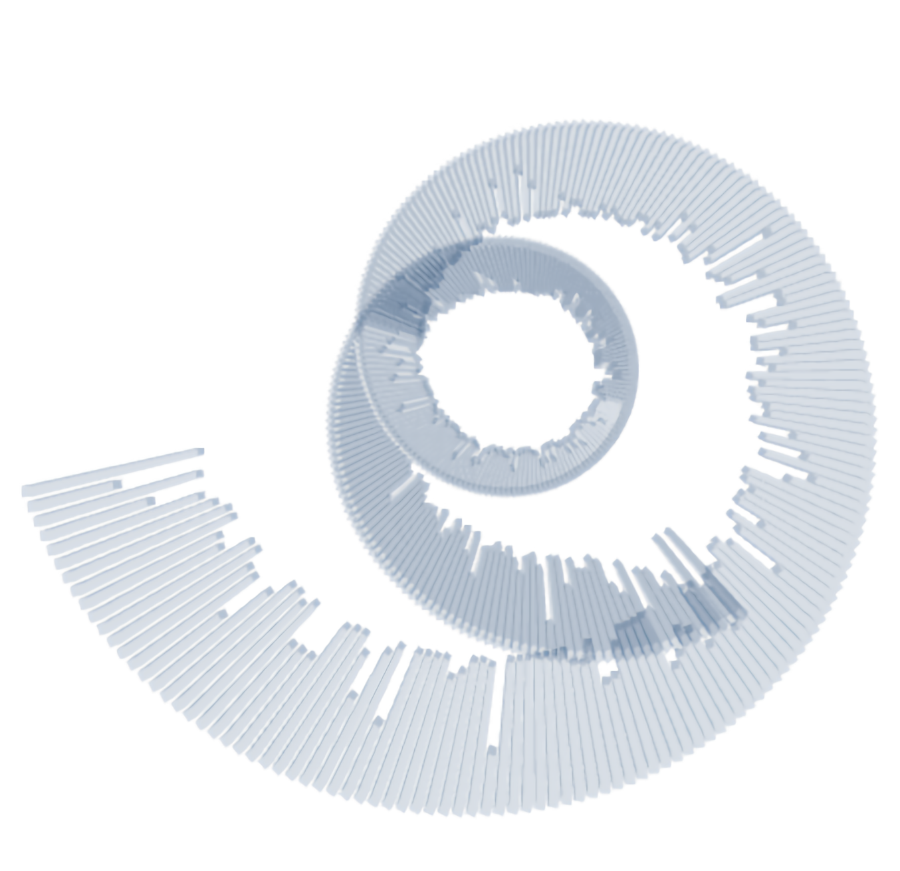
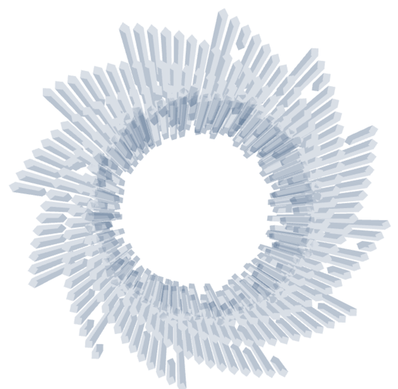
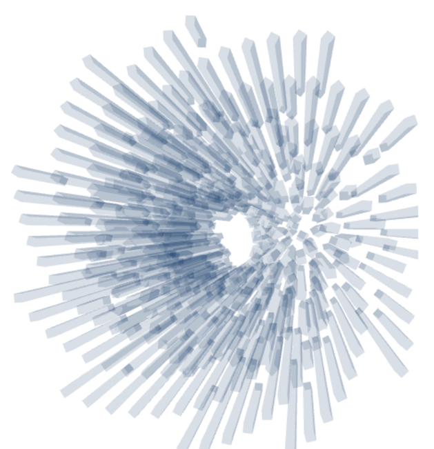
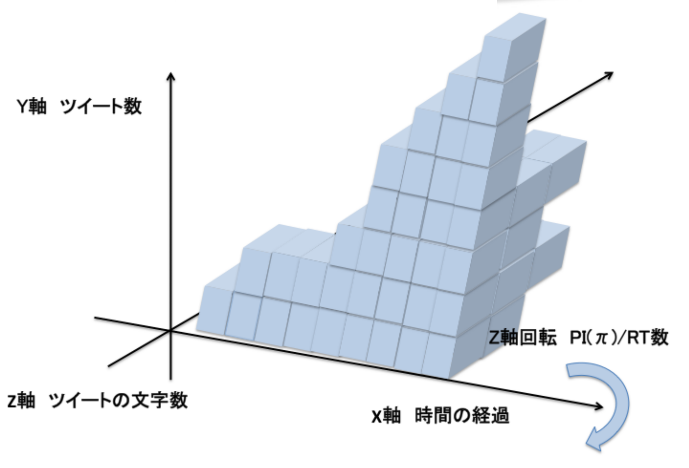
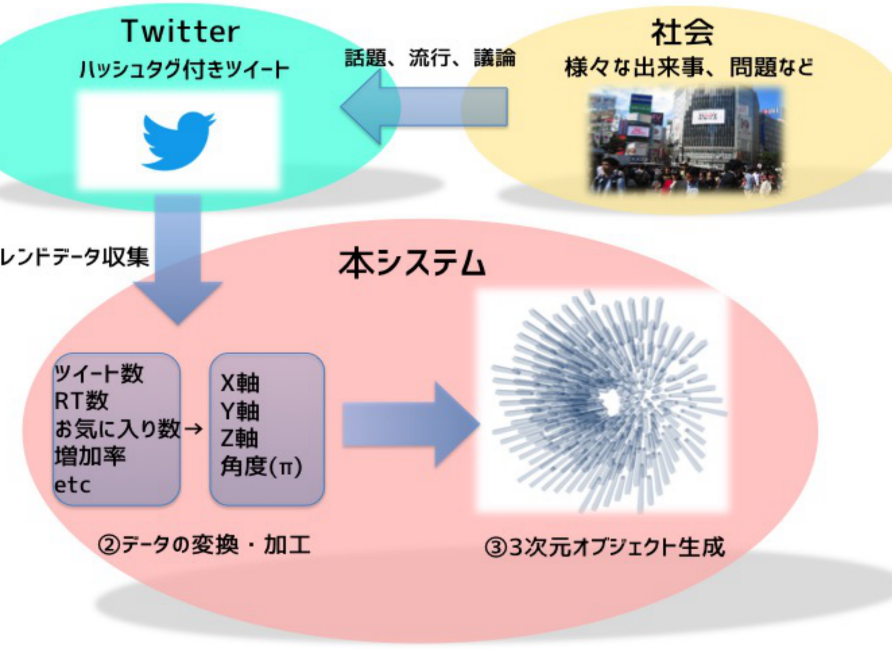

SNSにおける話題の可視化
(2015~2016,インスタレーション,共同制作)





担当部分
企画、アルゴリズムの作成、及びアプリケーション開発
概要/趣旨
Twitter上で交わされる会話や発信される発言から任意のワードやタグを含む投稿を検索・集
計し、
そこから抽出される言語情報や数値情報をリアルタイムに3Dオブジェクトに変換し表
示することによって、
そのワード特有の形状によるイメージを表現します。
制作に当たって考えたこと
大手SNSの一つであるTwitterの情報の伝播する速さと即時性の高さは他のSNSと比べても顕
著であり、また比較的匿名性も高いため、ソーシャルデータとしての人々の「生」の「リアル
タイム」の発言や会話を収集することができる。そこで、Twitterを利用する人々の特定の単
語やワードに対する「生」の声をTwitter社が提供するAPIを用いて数値データとして収集し、
そのデータを幾何学的形状のオブジェクトに変換すれば、そのワードが表す人々の反応や話
題の潮流を視覚的・抽象的に捉えると同時に、インスタレーションとして新しい表現が可能
なのではないかと考えて制作しました。
開発環境
Processing
Twitter4j(TwitterAPI)